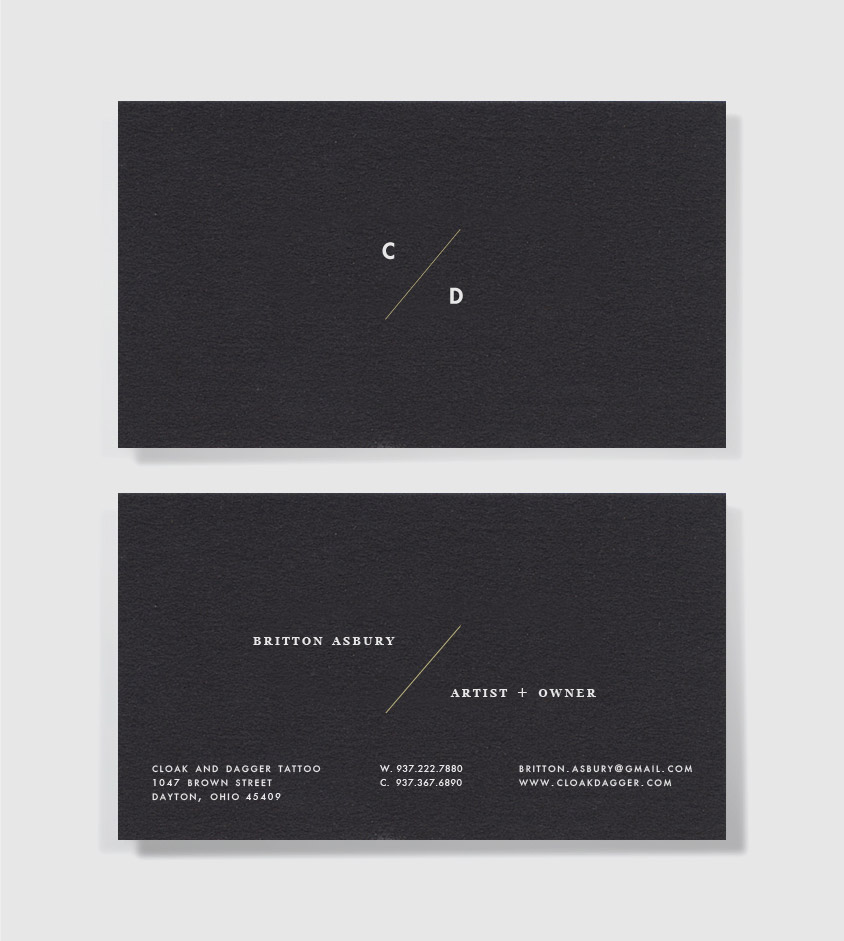
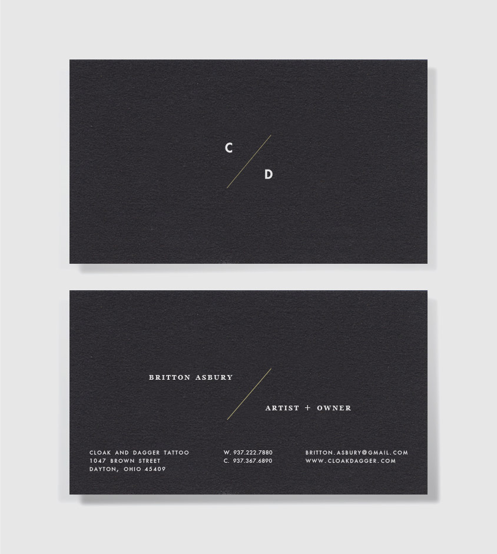

Cloak & Dagger
Art Direction, Design, Web Development
Cloak and Dagger is a small tattoo studio located in Dayton, OH. It was my goal to create an identity for Cloak and Dagger that would stand out from the often gaudy logos and typography that is displayed by most tattoo shops. A clean line was used in order to represent the needle and expertise seen in solid line work around most tattoos; while the C / D Monogram offers a distinguished mark that is as esoteric as the brand name implies.
Back to Top